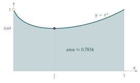

STEP III 2009, Question 8
Read the question before you go on. It is in the STEP Support Programme’s question database: step.maths.org/questions/09-s3-q8
The hook
Every student learns, sooner or later, that \((a + b)^2 \neq a^2 + b^2\). The false version is jokingly called the “freshman’s dream”. This question proves something that looks just as much like a beginner’s mistake: \[\int_0^1 x^x\,\mathrm{d}x = \sum_{n=1}^{\infty} \frac{(-1)^{n+1}}{n^n} = 1 - \frac{1}{2^2} + \frac{1}{3^3} - \frac{1}{4^4} + \cdots,\] and its companion \(\int_0^1 x^{-x}\,\mathrm{d}x = \sum_{n=1}^\infty \frac{1}{n^n}\). An integral of \(x^x\) turns into a sum of \(n^{-n}\): it seems too good to be true, which is why it is called the sophomore’s dream. But it is true, and Johann Bernoulli found it in 1697.
The proof uses three ideas you will meet constantly at university: limits that compare exponentials with powers, reduction formulae, and expanding a function as a power series and integrating term by term.
Before you start
The function \(x^x\) is not defined at \(x = 0\) by any formula you know (\(0^0\) is ambiguous). How does it behave as \(x\) approaches \(0\) from above? Try \(x = 0.1\), \(0.01\), \(0.001\) on a calculator.
\(0.1^{0.1} \approx 0.794\), \(0.01^{0.01} \approx 0.955\), \(0.001^{0.001} \approx 0.993\). It seems to approach \(1\). Part (i) proves this, which tells us the integrand is well behaved near \(0\) and the integral makes sense. The graph of \(x^x\) on \((0, 1]\) starts near \(1\), dips to a minimum and returns to \(1\) at \(x = 1\) (Figure 4.5.1).
Working it through
Stage 1 Powers beat logarithms
As \(x \to 0^+\), \(\ln x \to -\infty\). What substitution turns \(x \to 0^+\) into \(t \to \infty\), and turns \(x^m(\ln x)^n\) into something like \(e^{-mt}t^n\)?
Put \(x = e^{-t}\). As \(x \to 0^+\), \(t \to \infty\), and \(\ln x = -t\), so \[x^m(\ln x)^n = e^{-mt}(-t)^n = (-1)^n e^{-mt}t^n \to 0.\] In words: as \(x \to 0\), any positive power of \(x\) goes to zero faster than any power of \(\ln x\) blows up.■
With \(m = n = 1\), \(x\ln x \to 0\), and since the exponential function is continuous, \(x^x = e^{x\ln x} \to e^0 = 1\).■
Stage 2 A reduction formula
Integrate \(I_{n+1} = \int_0^1 x^m(\ln x)^{n+1}\,\mathrm{d}x\) by parts. Which factor should you integrate? What happens to the boundary term at \(x = 0\)?
Integrate \(x^m\) and differentiate \((\ln x)^{n+1}\): \[I_{n+1} = \left[\frac{x^{m+1}}{m+1}(\ln x)^{n+1}\right]_0^1 - \int_0^1 \frac{x^{m+1}}{m+1}\cdot\frac{(n+1)(\ln x)^n}{x}\,\mathrm{d}x.\] At \(x = 1\) the boundary term is \(0\) because \(\ln 1 = 0\); as \(x \to 0\) it tends to \(0\) by part (i) (with \(m+1\) and \(n+1\)). The remaining integral is \(\frac{n+1}{m+1}I_n\), so \[I_{n+1} = -\frac{n+1}{m+1}I_n. \qed\] Starting from \(I_0 = \int_0^1 x^m\,\mathrm{d}x = \frac{1}{m+1}\) and applying the formula \(n\) times, \[I_n = (-1)^n\frac{n!}{(m+1)^{n}}\cdot\frac{1}{m+1} = \frac{(-1)^n\,n!}{(m+1)^{n+1}}. \qed\]
Stage 3 The series
Expand \(x^x = e^{x\ln x}\) using the series for \(e^y\). What does each term look like? Which value of \(m\) makes the integrals in part (ii) appear?
Since \(e^y = \sum_{n=0}^\infty \frac{y^n}{n!}\) for every \(y\), \[x^x = e^{x\ln x} = \sum_{n=0}^{\infty} \frac{x^n(\ln x)^n}{n!}.\]
Integrate term by term from \(0\) to \(1\), using part (ii) with \(m = n\) (and treating \(n = 0\) separately). What do you get?
The \(n = 0\) term is \(1\), which integrates to \(1\). For \(n \geq 1\), part (ii) with \(m = n\) gives \(\int_0^1 x^n(\ln x)^n\,\mathrm{d}x = \frac{(-1)^n\,n!}{(n+1)^{n+1}}\), so the \(n\)th term contributes \(\frac{(-1)^n}{(n+1)^{n+1}}\). Adding up, \[\int_0^1 x^x\,\mathrm{d}x = 1 - \frac{1}{2^2} + \frac{1}{3^3} - \frac{1}{4^4} + \cdots. \qed\] (The \(n = 0\) term fits the same pattern, \(\frac{1}{1^1}\).) The terms shrink extremely fast: seven terms give the value \(0.783430\ldots\) to six decimal places.

Looking back
Substitute to compare growth rates. Putting \(x = e^{-t}\) turned a limit at \(0\) into a familiar limit at \(\infty\).
Boundary terms need checking. The reduction formula depended on the boundary term vanishing at \(x = 0\), which is where part (i) was used.
Series, then integrate. Expanding the integrand as a power series and integrating each term turned an integral with no elementary antiderivative into a rapidly convergent sum.
What’s really going on
Stage 3 quietly swapped an infinite sum with an integral: \(\int \sum = \sum \int\). That is not always allowed. At university you will meet examples where it fails, and theorems that say when it is safe. The simplest says that it is safe when the series converges uniformly: the tail of the series can be made small at every \(x\) simultaneously. Here, \(|x\ln x| \leq \frac1e\) on \((0, 1]\), so the \(n\)th term is at most \(\frac{e^{-n}}{n!}\) in size, whatever \(x\) is. The sum of these bounds converges, so the tails are uniformly small and the swap is justified. This argument is called the Weierstrass M-test, and it is one of the workhorses of analysis.
Why the “dream” works
The identity is special. It depends on the exact match between the powers in \(\frac{(x\ln x)^n}{n!}\) and the integral \(\int_0^1 x^n(\ln x)^n\,\mathrm{d}x = \frac{(-1)^n n!}{(n+1)^{n+1}}\), where the \(n!\) cancels perfectly. Underneath, this integral is a Gamma function in disguise: the substitution \(x = e^{-t/(n+1)}\) turns it into \(\frac{(-1)^n}{(n+1)^{n+1}}\int_0^\infty t^n e^{-t}\,\mathrm{d}t = \frac{(-1)^n\,\Gamma(n+1)}{(n+1)^{n+1}}\), connecting with Section 4.4.
The name
The name “sophomore’s dream” was coined by Jonathan Borwein and his co-authors in their 2004 book Experimentation in Mathematics, as a companion to the “freshman’s dream” \((a + b)^n = a^n + b^n\) (which, curiously, is true in some number systems: in arithmetic modulo a prime \(p\), \((a + b)^p = a^p + b^p\), because all the middle binomial coefficients are divisible by \(p\)). Borwein was a pioneer of experimental mathematics, in which computers are used to discover identities like this one, which are then proved by hand.
The thinking skill
If an integrand has a power series whose terms you can integrate, integrate each term and add up the results.
It is a powerful way to evaluate integrals that have no elementary antiderivative. Always ask whether swapping the sum and the integral is justified; usually it is, but you should know why.
Try this next
The companion. Show that \(\displaystyle\int_0^1 x^{-x}\,\mathrm{d}x = \sum_{n=1}^{\infty}\frac{1}{n^n} \approx 1.2913\).
The minimum. Show that \(x^x\) has its minimum on \((0, \infty)\) at \(x = \frac1e\), with value \(e^{-1/e}\).
How many terms? For an alternating series with decreasing terms, the error after stopping is less than the first omitted term. How many terms of the series for \(\int_0^1 x^x\,\mathrm{d}x\) are needed for six decimal places?
A cousin. Use the same method to show that \(\displaystyle\int_0^1 x^2\ln x\,\mathrm{d}x = -\frac19\), and that \(\displaystyle\int_0^1 \frac{\ln x}{1 - x}\,\mathrm{d}x = -\sum_{n=1}^\infty \frac{1}{n^2}\). (By Section 2.4, this is \(-\frac{\pi^2}{6}\).)
Further reading
Jonathan Borwein, David Bailey & Roland Girgensohn, Experimentation in Mathematics (A. K. Peters). The source of the name, and many more identities discovered by computer.
William Dunham, The Calculus Gallery (Princeton University Press). Masterpieces of analysis from Newton to Lebesgue, including Bernoulli’s work.
Mary Hart, Guide to Analysis (Palgrave). Clear treatment of uniform convergence and when sums and integrals can be swapped.